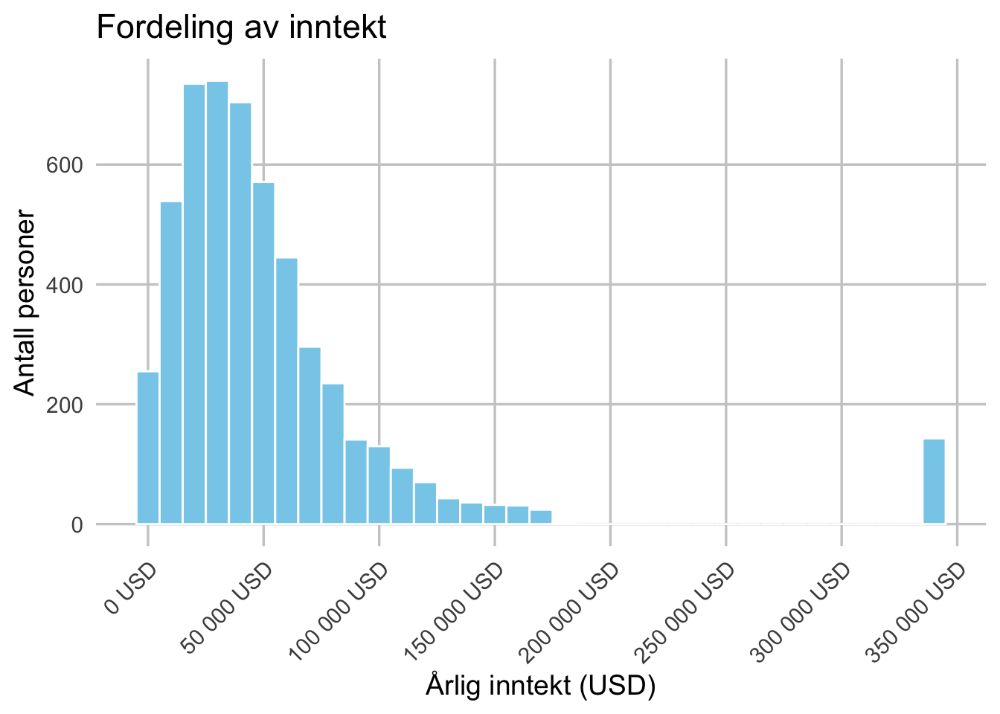

Sammenhenger mellom inntekt, alder, kjønn og sivilstatus
Author
Karin Liang, Katinca Valvatne & Frida Alendal
Introduction
Hvilke sammenhenger har vi mellom inntekt, alder, kjønn og sivilstatus? I denne presentasjonen undersøker vi disse sammenhengene i datasettet modelr::heights. Tidligere forskning viser at personlige og sosiale kjennetegn ofte henger sammen med økonomisk utbytte. For eksempel finner Judge & Cable (2004) en positiv sammenheng mellom høyde og inntekt, kontrollert for kjønn og alder. Vi vil se om vi kan avdekke lignende mønstre med våre variabler, og hvorvidt kjønn og sivilstatus spiller en rolle for inntektsforskjeller.
I analysen kombinerer vi beskrivende statistikk og grafer for å identifisere mønstre mellom grupper. For eksempel hvordan menn og kvinner, eller gifte og single, skiller seg i gjennomsnittsinntekt, og om alder modererer disse forskjellene.
Review of literature
Description of data
# andre pakker library(dplyr)
Attaching package: 'dplyr'
The following objects are masked from 'package:stats':
filter, lag
The following objects are masked from 'package:base':
intersect, setdiff, setequal, union
── Conflicts ────────────────────────────────────────── tidyverse_conflicts() ──
✖ dplyr::filter() masks stats::filter()
✖ dplyr::lag() masks stats::lag()
ℹ Use the conflicted package (<http://conflicted.r-lib.org/>) to force all conflicts to become errors
library(scales)
Attaching package: 'scales'
The following object is masked from 'package:purrr':
discard
The following object is masked from 'package:readr':
col_factor
library(vtable)
Loading required package: kableExtra
Attaching package: 'kableExtra'
The following object is masked from 'package:dplyr':
group_rows
library(flextable)
Attaching package: 'flextable'
The following objects are masked from 'package:kableExtra':
as_image, footnote
The following object is masked from 'package:purrr':
compose
# laster inn pakken modelr og datasett heightsoptions(repos =c(CRAN ="https://cloud.r-project.org"))pkgs <-c("modelr","dplyr","ggplot2","scales","vtable","flextable")to_install <-setdiff(pkgs, rownames(installed.packages()))if (length(to_install)) install.packages(to_install)lapply(pkgs, library, character.only =TRUE)
# A tibble: 7,006 × 8
income height weight age marital sex education afqt
<int> <dbl> <int> <int> <fct> <fct> <int> <dbl>
1 19000 60 155 53 married female 13 6.84
2 35000 70 156 51 married female 10 49.4
3 105000 65 195 52 married male 16 99.4
4 40000 63 197 54 married female 14 44.0
5 75000 66 190 49 married male 14 59.7
6 102000 68 200 49 divorced female 18 98.8
7 0 74 225 48 married male 16 82.3
8 70000 64 160 54 divorced female 12 50.3
9 60000 69 162 55 divorced male 12 89.7
10 150000 69 194 54 divorced male 13 96.0
# ℹ 6,996 more rows
Datasettet ‘heights’ som benyttes i denne oppgavaen er hentet fra pakken ‘modelr’.Datasettet inneholder informasjon om enkeltpersoner, og består av 7006 observasjoner og 8 variabler: inntekt, høyde, vekt, alder, sivilstatus, kjønn, utdanningsnivå og AFQT-skår. Variablene omfatter blant annet inntekt (income), alder (age), kjønn (sex) og sivilstatus (marital), som er relevante for denne oppgaven.
Før analysen ble variablene i datasettet gitt nye navn, og datasettet ble ryddet ved å fjerne observasjoner med manglende verdier (NA) og nullverdier. De resterende observasjonene utgjør grunnlaget for videre analyse.
# rydder datasettet# viser struktur av datasettet og summarystr(heights)
income height weight age
Min. : 0.0 Min. :52.0 Min. : 76.0 Min. :47.00
1st Qu.: 165.5 1st Qu.:64.0 1st Qu.:157.0 1st Qu.:49.00
Median : 29589.5 Median :67.0 Median :184.0 Median :51.00
Mean : 41203.9 Mean :67.1 Mean :188.3 Mean :51.33
3rd Qu.: 55000.0 3rd Qu.:70.0 3rd Qu.:212.0 3rd Qu.:53.00
Max. :343830.0 Max. :84.0 Max. :524.0 Max. :56.00
NA's :95
marital sex education afqt
single :1124 male :3402 Min. : 1.00 Min. : 0.00
married :3806 female:3604 1st Qu.:12.00 1st Qu.: 15.12
separated: 366 Median :12.00 Median : 36.76
divorced :1549 Mean :13.22 Mean : 41.21
widowed : 161 3rd Qu.:15.00 3rd Qu.: 65.24
Max. :20.00 Max. :100.00
NA's :10 NA's :262
inntekt alder kjonn sivilstatus
Min. : 45 Min. :47.00 male :2657 single : 710
1st Qu.: 23425 1st Qu.:49.00 female:2609 married :3101
Median : 40000 Median :51.00 separated: 233
Mean : 54819 Mean :51.28 divorced :1115
3rd Qu.: 65000 3rd Qu.:53.00 widowed : 107
Max. :343830 Max. :56.00
Etter at datasettet ble filtrert og tilpasset analysen, består det nå av 5 266 observasjoner og fire variabler: inntekt, alder, kjønn og sivilstatus.
Resultatene fra summary viser følgende: Inntekt varierer fra 45 til 343 830 USD, med en median på 40 000 USD og et gjennomsnitt på 54 819 USD. Alder varierer mellom 47 og 56 år, med en median på 51 år. Kjønn er jevnt fordelt, med 2 657 menn og 2 609 kvinner. Sivilstatus viser at flertallet (3 101 personer) er gift, mens 710 er single, 1 115 er skilt, 233 separert og 107 enker/enkemenn.
Etter rensingen består datasettet dermed av et balansert og ryddig utvalg som danner grunnlaget for videre beskrivelse og analyse av sammenhengen mellom inntekt, alder, kjønn og sivilstatus.
# Tabell for de to numeriske variablene: inntekt og alderheights %>%select(inntekt, alder) %>%# Velger kun de numeriske variablene vtable::st(data = ., # Bruker det nåværende datasettetout ="return", # Returnerer tabellen i stedet for å skrive den utlabels =c(inntekt ="Inntekt (USD)",alder ="Alder (år)" ),add.median =TRUE# Legger til median i tabellen ) %>%as_flextable() %>%autofit()
Variable
N
Mean
Std. Dev.
Min
Pctl. 25
Pctl. 50
Pctl. 75
Max
character
character
character
character
character
character
character
character
character
Inntekt (USD)
5266
54819
58394
45
23425
40000
65000
343830
Alder (år)
5266
51
2.2
47
49
51
53
56
n: 2
Denne tabellen viser en deskriptiv oppsummering av de numeriske variablene i datasettet: inntekt og alder.
De fleste har moderate inntekter, men noen få med svært høye verdier trekker gjennomsnittet kraftig opp. Aldersspennet er lite, deltakerne er i hovedsak i samme aldersgruppe .
Tabellresultatene viser at datasettet består av en jevn og homogen gruppe når det gjelder alder, men med stor variasjon i inntektsnivå.
# figur for å beskrive fordeling av inntektfordeling_inntekt <- heights %>%ggplot(aes(x = inntekt)) +geom_histogram(binwidth =10000, fill ="skyblue", color ="white") +scale_x_continuous(breaks =seq(0, 350000, 50000), # Viser et merke for hver 50 000 USDlabels =label_number(big.mark =" ", suffix =" USD") ) +labs(title ="Fordeling av inntekt",x ="Årlig inntekt (USD)",y ="Antall personer" ) +theme_minimal(base_size =14) +# Større tekst for bedre lesbarhettheme(panel.grid.major =element_line(color ="grey80", linewidth =0.6), # Tydelige hovedrutenettlinjerpanel.grid.minor =element_blank(), # Fjerner små rutenettlinjeraxis.text.x =element_text(angle =45, hjust =1) # Skråstiller teksten på x-aksen for å unngå overlapp )fordeling_inntekt

Variabelen inntekt representerer den årlige inntekten (målt i USD) for hver observasjon i datasettet.
Figuren fordeling av inntekt viser hvordan inntekten fordeler seg blant 5 266 personene i datasettet. De fleste observasjonene ligger mellom 20 000 og 80 000 USD, som representerer hovedtyngden av inntektene. Samtidig ser vi at et lite mindretall tjener vesentlig mer enn flertallet. De få personer har svært høye inntekter, helt opp mot over 300 000 USD, noe som trekker gjennomsnittet betydelig opp. Derfor er fordelingen høyreskjev.
Variabelen alder viser deltakernes alder målt i hele år.
Figuren fordeling av kjønn viser at aldersfordelingen mellom 47 til 56 år, er jevn og konsentrert innenfor et smalt intervall. De fleste observasjonene ligger mellom 49 og 53 år, med en gjennomsnittsalder på omtrent 51 år. Aldersspennet er lite, noe som betyr at de fleste personene i datasettet er omtrent like gamle.
# Tabell for de to kategoriske variablene: sivilstatus og kjønnheights %>%select(sivilstatus, kjonn) %>%# Velger kun de kategoriske variablene vtable::st(data = ., out ="return", # Returnerer tabellen som et objektlabels =c(sivilstatus ="Sivilstatus",kjonn ="Kjønn" ) ) %>%as_flextable() %>%autofit()
Variable
N
Percent
character
character
character
Sivilstatus
5266
... single
710
13%
... married
3101
59%
... separated
233
4%
... divorced
1115
21%
... widowed
107
2%
Kjønn
5266
... male
2657
50%
... female
2609
50%
n: 9
Denne tabellen viser en deskriptiv oppsummering av de kategoriske variablene i datasettet: sivilstatus og kjønn.
Flertallet av personene i datasettet er gift (married) — rundt 59 % av utvalget (3 101 personer). 710 personer (13 %) er single, mens 1 115 (21 %) er skilt (divorced). De resterende er separert (233 personer) og enkemann/enke (107 personer).
Fordelingen mellom kjønn er nesten helt jevn, med 2 657 menn (50,5 %) og 2 609 kvinner (49,5 %).
# Tabell: Beskrivende statistikk for inntekt og alder etter kjønnheights %>%select(kjonn, inntekt, alder) %>% vtable::st(group ="kjonn",group.long =TRUE,labels =c(inntekt ="Inntekt (USD)",alder ="Alder (år)" ),out ="return" ) %>%as_flextable() %>%autofit()
Variable
N
Mean
Std. Dev.
Min
Pctl. 25
Pctl. 75
Max
character
character
character
character
character
character
character
character
kjonn: male
Inntekt (USD)
2657
68514
71686
72
30000
80000
343830
Alder (år)
2657
51
2.2
47
49
53
56
kjonn: female
Inntekt (USD)
2609
40871
35563
45
19000
54000
343830
Alder (år)
2609
51
2.2
47
49
53
56
n: 7
# figure fordeling_kjonn <- heights %>%ggplot(aes(x = kjonn)) +geom_bar(fill ="sandybrown", color ="white") +geom_text(stat ="count",aes(label = ..count..),vjust =-0.3, # Tekst som vises over kolonnensize =2, # Skriftstørrelsecolor ="black"# Skriftfarge ) +labs(title ="Fordeling av kjønn",x ="Kjønn",y ="Antall personer" ) +theme_minimal(base_size =14) +theme(panel.grid.major =element_line(color ="grey80", linewidth =0.6),panel.grid.minor =element_blank() )fordeling_kjonn
Warning: The dot-dot notation (`..count..`) was deprecated in ggplot2 3.4.0.
ℹ Please use `after_stat(count)` instead.
Variabelen kjønn beskriver fordelingen mellom menn og kvinner i datasettet.
Figuren fordeling av kjønn viser at kjønnsfordelingen av 5 266 observasjonene i datasettet er nesten helt balansert. Av de 5 266 observasjonene er det 2 657 menn og 2 609 kvinner. Forskjellen mellom gruppene er dermed svært liten, noe som betyr at analysen ikke vil være skjev med hensyn til kjønn.
# Tabell: Beskrivende statistikk for inntekt og alder etter sivilstatus (Gift vs. Ikke gift)suppressWarnings({ heights %>%mutate(sivilgruppe =if_else(sivilstatus =="married", "Gift", "Ikke gift"),sivilgruppe =as.character(sivilgruppe) # konvertert til tekst ) %>%select(sivilgruppe, inntekt, alder) %>% vtable::st(group ="sivilgruppe",group.long =TRUE,summ =c("notNA(x)", "mean(x)", "sd(x)"),summ.names =c("N", "Mean", "SD"),labels =c(inntekt ="Inntekt (USD)",alder ="Alder (år)" ),out ="return" ) %>%as_flextable() %>%set_caption("Tabell X. Beskrivende statistikk for inntekt og alder etter sivilstatus (Gift vs. Ikke gift)") %>%autofit()})
Variable
N
Mean
SD
character
character
character
character
sivilgruppe: Gift
Inntekt (USD)
3101
62931
65476
Alder (år)
3101
51
2.2
sivilgruppe: Ikke gift
Inntekt (USD)
2165
43199
43880
Alder (år)
2165
51
2.2
n: 7
# figurefordeling_sivilstatus <- heights %>%ggplot(aes(x = sivilstatus)) +geom_bar(fill ="tomato", color ="white") +geom_text(stat ="count",aes(label = ..count..),vjust =-0.3, # Tekst som vises over kolonnensize =2, # Skriftstørrelsecolor ="black"# Skriftfarge ) +labs(title ="Fordeling av sivilstatus",x ="Sivilstatus",y ="Antall personer" ) +theme_minimal(base_size =14) +theme(panel.grid.major =element_line(color ="grey80", linewidth =0.6),panel.grid.minor =element_blank(),axis.text.x =element_text(angle =30, hjust =1) )fordeling_sivilstatus
Variabelen sivilstatus viser 5266 deltakernes ekteskapsstatus og består av fem kategorier: single, married, separated, divorced og widowed.
Figuren fordeling av sivilstatus viser hvordan observasjonene fordeler seg mellom disse gruppene.
Det fremgår tydelig at flertallet av personene er gift (married), med 3 101 observasjoner, noe som utgjør nærmere 59 prosent av utvalget. Videre er 1 115 personer skilt (divorced) og 710 single (never married), mens kategoriene separated (233) og widowed (107) utgjør en mindre andel.
Fordelingen av sivilstatus viser dermed et mønster som er vanlig i voksenbefolkningen, der de fleste er gift eller tidligere gift.